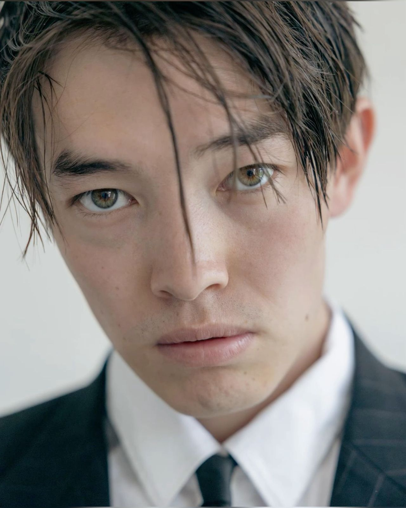

FaceLive AI
Камера и геометрическое наложение лица по фотографии

Фото по умолчанию загруженоОжидание запуска
Демонстрация: 2D-наложение с отслеживанием лица, не нейросетевой deepfake. Не заменяет камеру TikTok/Instagram.Камера и геометрическое наложение лица по фотографии

Фото по умолчанию загруженоОжидание запуска
Демонстрация: 2D-наложение с отслеживанием лица, не нейросетевой deepfake. Не заменяет камеру TikTok/Instagram.